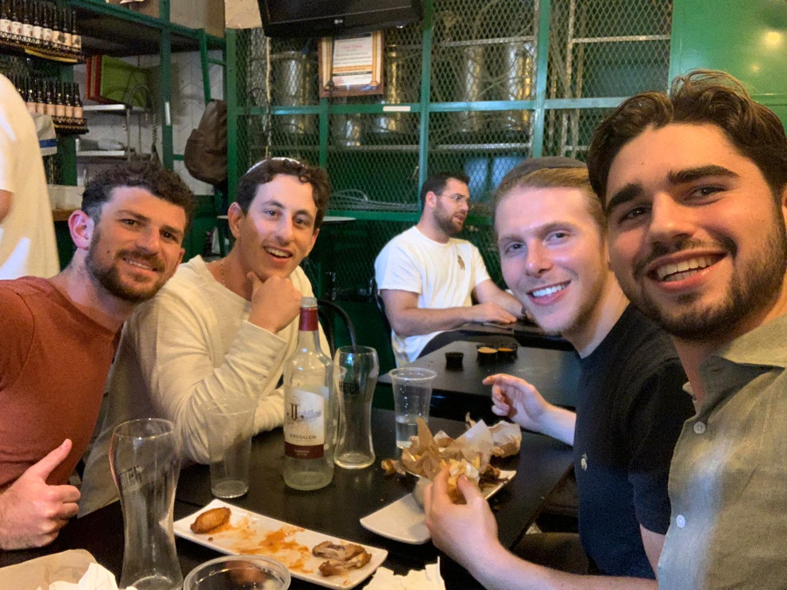

Tuesday October 29th 2024, Tbilisi, Georgia
Tonight is my last night in Georgia. It has been an amazing 2.5 weeks in this special and unique country. Zach and I were able to close a deal on an apartment in the up and coming ski region literally on the last day we were here. I did not realize how much effort goes into making a deal and wiring large sums of money internationally. I learned so much about business and negotiating! This is why I quit my job, to curate awesome experiences and take calculated risks. I want to build something my family and future family will be proud of. Georgia has so much beautiful nature and there is so much to do. Also the country is incredibly cheap and I believe it should be on everyone’s lists in the next five years. Today I realized this is my last time in the “western world” for a while. Heading to Africa and Asia will be a big change in the journey. I am excited for the novelty of new places and experiences again. Another idea that occurred to me throughout my time here is how two different people can value the same thing differently. This can be property, stocks, friendships, really anything. You can create your own value hierarchy. Not all value hierarchies are created equally though so you have to design yours properly and with sufficient data that it is optimized for health and longevity, if you choose to optimize for these. Here are some key takeaways from my time here: 1. Put yourself in positions to meet people who do cool things. 2. The Soviet Union and communism caused a lot of harm to a lot of people. 3. Geopolitics is not black and white, there is a lot of gray. 4. Traveling slow and home basing a single place is better than changing hostels every other day. 5. I do not mind the cold, but I am a Florida boy at heart and prefer the temperate climates. 6. I love snowboarding 7. Continue to strive to be completely present in every interaction.


Sunday October 27th 2024, Tbilisi, Georgia
First double whammy post in a day! Zach and I went to the city of Sighnagi today. The city is known for traditional wine making methods which date back 8,000 years! The Georgian traditional method to ferment the wine uses large clay pots called qvevri. The qvevri vessels are semi-porous, allowing micro-oxygenation, which enhances the complexity of the wine. Their egg-like shape encourages circulation, improving fermentation and flavor development. Unlike modern stainless steel vats, qvevri vessels require no additional preservatives or chemicals. This method relies on natural fermentation, making it a staple of organic winemaking. Wines made in qvevri tend to be robust, earthy, and tannic, with complex flavors and a fuller body, particularly due to the extended skin contact of the grapes. The amber wines, made by fermenting white grapes with their skins, are a signature of Georgian qvevri winemaking. Overall it was really cool learning about such an ancient technology and the wines were very unique. Also at lunch today overlooking the city, I decided I am going to reinvigorate learning complex mathematics and quantum electrodynamics again.


Sunday October 27th 2024, Tbilisi, Georgia
I woke up this morning to the sound of church bells. I woke up slow and groggy. I took a shower and brushed my teeth. As I was putting on my shirt for the day I noticed a tag on the inside of my shirt for the first time. It says “CLARITY IS THE ULTIMATE CURRENCY”. I wear this shirt a lot and I never noticed this profound statement. I began to dissect what this means and why I have never noticed it. This statement is serendipitous because it encapsulates adventure capitalism. How do you gain clarity? Why is clarity the ultimate form of currency? What is currency? I will address these questions but first I wanted to understand why I have been lacking clarity. It all comes down to one thing, consumption. There are various forms of consumption, what you take in through sight, through taste, through hearing, through smelling, through touch. Humans are effectively data sensor collectors. The only difference between us and a computer is that the data we collect through our senses vastly impacts our thoughts and emotions, which can either lighten or obscure your clarity. Clarity and intuition go hand in hand so if your clarity is dampened then you cannot properly intuit either. Now, when inspecting why your clarity is dimmed you must analyze it from first principles. When you wake up in the morning, what are you consuming? If you go directly to your phone and social media or even texts messages you consume information that pulls your awareness to possibly undesirable places. If you wake up to the sound of cars honking or people yelling your clarity could also be dulled. I think sight and sound are the most important sensor apparatuses to sharpen in the morning. Instead of dampening your clarity, you want to enhance it. How do you sharpen it? It really depends on the person but I personally like being outside and connecting with the natural sounds and sights of nature. This process in turn demands that you are extracted from your individualistic ego and see the creation as a bigger picture immediately. This produces feelings of humility, which is a big key towards clarity. Now that we have properly understood clarity and how to sharpen it we must understand what is currency. I have learned a lot about currency and economics since starting the journey of adventure capitalism. At the basic level, currency is a medium of exchange to facilitate transactions of goods or services. Why is clarity not just a form of currency but the ULTIMATE? Usually when people think of currency it is to buy something for themselves, a nice car or new shoes etc. However, when you attain true clarity you understand that the whole point of creation is for the other, to be selfless, to have humility, to give. Therefore, when you enhance and sharpen your clarity and use it as a form of currency you are able to give yourself fully! This means you are able to serve humanity, the planet and the universe to the ULTIMATE extent.
Friday October 25th 2024, Tbilisi, Georgia
Today was an action packed day. I woke up and the owner of the guest house, Mother Goari, made Zach and I breakfast. It was a traditional Georgian breakfast with pancake things and vegetables with nuts. After breakfast we went to drop our laundry off for a much needed wash. While waiting for my laundry I read a few pages of my book, The Old Man and the Sea, while Zach went to the Bank of Georgia to finalize opening a bank account. I order a hot cacao which was pretty average at some cafe. After, I met up with the seller of the Gudauri apartment, Joseph Cohen. He is a French Moroccan Israeli Jew who is 65 years old. He was very nice and charismatic and we had a great talk. We discussed geopolitics and his investments in Georgia over the past years. He told me that the Georgian economy is like a yoyo. This means small geopolitical disturbances can create large fluctuations in prices. He told me that the Emirates is the next place to make money. We met at his nail salon he owns in Tbilisi which was cool. I really enjoyed talking and learning from him. He is about to move back to Israel and work on more projects there. After meeting Mr. Cohen we got our dry laundry and headed back to the guesthouse. I was able to chill for ten minutes before walking to my haircut. I walked 40 minutes to a barbershop appointment I had down Rustaveli street. I went to Partizan Barber shop and my barber was Arsen. He was a magician with the scissors. It was probably the best haircut I ever had. He didn’t speak any English. I just showed him a picture and he went to town. He was meticulous and focused. He used this blow dryer with an attachment which was super cool. He also trimmed my facial hair which was a first for me. It was 25 dollars total! In the US that service easily could be 75-100 dollars. After getting cut up I walked back and got ready for Shabbat. At the Shabbat meal I met two cool guys, Yosef and Yaakov. They told me their life stories and we laughed and enjoyed. It was a really nice time. I just have 5 more days left in Georgia. Hopefully we can close the deal on the apartment in the ski region as well as head to the wine region to relax and explore. It has been a very nice and special time here in this unique country.
Tuesday October 22nd 2024, Tbilisi, Georgia
Back in Tbilisi, drove all day today. Just wanted to drop these pictures from today. Jared, Zach and I went to Prometheus Cave which is near Kutaisi. Today is Jared's last night. I am very grateful for him coming all the way to Georgia for a week. The three of us are lucky enough to have been on a handful of great advenutes together.


Monday October 21st 2024, Tskaltubo, Georgia
It stopped raining and the sun peaked through the clouds this morning! I walked the property of the hotel and enjoyed the smells of the nature after the rain. I was able to regain some clarity with the pause in rain. Your environment really plays a huge role in your psyche. It’s crucial to surround yourself with the proper nature that best suits you. That’s why traveling is so important. You are able to deduce which nature you want to diffuse with. I’ve been in Georgia for a week and want to give my proper analysis of the country. The capital city of Tbilisi is where all the action is at. It’s becoming developed and there are lots of things to do and see. When I drove out into the countryside you could still see the remnants of the Soviet strangle hold on the country. Poverty and Soviet architecture and abandon buildings reap the streets. The young people are all moving to Tbilisi for better opportunity. The country is mountainous and has a variety of landscapes. The food is yummy and unique but heavy, you cannot eat it everyday. The wine is spectacular. People do not know that Georgia is one of the oldest producers of wine and have their own unique fermentation process. The people are friendly and welcoming to foreigners but are still serious and eastern European. There isn’t much crime or homelessness in the main cities which is nice. Some stray dogs roam the street but they are well behaved. The country really wants to be a part of the EU but it seems like there is much corruption in the government. Overall I really like Georgia and recommend it to any one looking for a unique new country to visit. There’s skiing, history, hiking, beaches, caves, and more.
Sunday October 20th 2024, Tskaltubo, Georgia
I have not seen the sun in four days. Not being in sunlight definitley affects your energy levels. I have always lived in warm climate places and never experieneced the seasonal darkness people talk about. It is obvious that sunlight is crucial for life, but I never realized how much of an affect it can play on the human system. I am currently in a small down called Tsaltubo, outside of the third biggest city in Georgia, Kutaisi. This place is known for its hot springs and healing mineral waters. There is a lot of abandoned soviet architectrure here. Joshep Stalin would come to this place for the healing properties of the waters. Today Zach, Jared and I went to one of the spas. It was a super weird and unique experience. We got the hydrotherapy massage. The building looked like a hospital from the 1950s. We each got our own rooms and in the rooms there was a bathtub looking thing. A nurse who barely spoke any english came and instructed me what to do. I sat in the mienral bath for ten minutes and then the nurse used a pressurized water gun to massage my body. It was weird but funny. The mineral waters here are enriched with radon which gives them their special properties. We are going back tomorrow for another session. We have another night here, but I am looking forward to being back in the sunlight in Tbilisi. Today marks one month of the start of my trip. The days all merge together and each day is filled to the brim with new experiences.
Saturday October 19th 2024, Batumi, Georgia
I have been off center the past two days. I am getting over the phase of the trip where it feels like a vacation and transitioning into this lifestyle for the next six months. On vacation you are always on the go to sight see and explore. However, now the traveling is my lifestyle, I am a traveler. The past two days have been slow due to the rain here in Batumi on the Black Sea, and I believe it knocked me off my focus. This morning I woke up and went on a walk to realign and remember why I decided to do this. I wanted to adventure and travel the world, to experience different places and cultures while I am young and healthy. I want to take calculated risks and try my hand at investing and starting a business, to build something for my future family and friends. On the slow days when there is not much excitement some doubts can start to creep in due to the discomfort and lack of clarity. Zach made a nice analogy of being on top of a hill before a long hike. From the top of the hill you see where you want to end up, and you see a valley between two hilltops. As you begin to walk the journey you lose sight of the hilltop you started from, you lose sight of why you started the journey in the first place. All you are left to do is trudge along in the valley in the dark of night. Now you are in the depths of a gorge, not knowing where you started or where the end is. It is required of a young man to continue along the journey, even when it is difficult and uncomfortable. It is required to trust your former intuition of why you started the journey in the first place. It is imperative to continue to walk through the valley towards the destination, even if there are uncertainties or not a clear path. I think this exercise is required for all young men to cultivate strength and trust. This in turn will make you a better man, father, son, husband, friend. After my walk Zach and I went to Chabad of Batumi. It was my first time getting to go to Chabad on the travels. There were about 50 people there and it was really beautiful to ground myself. We met really cool Israeli’s who were also traveling. An older gentleman, Yoram told us all of his travel stories and investment advice. We talked with Yaella and a drummer guy who were about our age about traveling as well. It was so nice talking with them and hearing their stories.
Tuesday October 15th 2024, Tbilisi, Georgia
Wow what a day. I woke up pretty late at about 11:30. Zach and I went to tour apartments in Gudauri at around 12:30. There was a whole fiasco with getting a key to see the apartment. The realtor was not with us so we had to go to the various front desks to see the places. We saw 4 different units in total. One unit stuck out which was a one bedroom with an amazing balcony overlooking the main plaza. We met with the property manager of the unit and he gave us some very valuable information. After seeing the units we said goodbye to Gudauri and drove back to Tbilisi. A 2 hour drive turned into 3 hours with traffic. Zach and I returned to our guest house and got Thai food for dinner. We had been eating a lot of Georgian food already. We discussed business over a nice glass of semi-sweet wine. It was a jam packed day and I learned so much about investment strategies and real estate so quickly! Jared’s flight got delayed so he should arrive tomorrow early in the morning. Looking forward to the triangulation and for the Blargvengers to reunite!
Monday October 14th 2024, Gudauri, Georgia
I landed in the country of Georgia in the capital of Tbilisi at 00:30 on Monday. The flight was a little bumpy and I was dehydrated. I was excited to get to the first new country on the trip. Zach and I had been talking about going to Georgia for over a year now and it was such a great feeling for a year's worth of ideas and planning to come into reality. When I landed I started to take note of all of the details of Georgia. I first noticed a lot of election related billboards. On October 26th Georgia will undergo a monumental election to decide the fate of the country. They will elect a 150 person parliament. If the incumbent stays in power, Georgia is more likely to become closer to Russia, however if the oppostion wins, Georgia has a clear path paved towards joining the European Union. As Georgia is a key place Zach and I are looking to invest and do business, this election is of critical importance to us. I also noticed many real estate advertisements immediately in the airport. There are so many crazy developments which are going on here. I am not sure if it is a good sign or if it oversaturated. When we drove to our hostel we stopped for gas. The gas here is super cheap due to proximity to the Gulf region. Today we rented a car and drove to the ski region of Georgia, Gudauri. This was high on our prospective investment list due to our love for skiing and the high growth tourism that the area could offer. We drove two hours from Tbilisi high into the mountains. It was rainy and cold but we talked to some locals and received very valuable information. It was cool being on the frontier, as an adventure capitalist for the first time. We learned so much just from being there and exploring. Tomorrow we meet with realators to tour some units.

Sunday Ocotber 13th 2024, Jerusalem, Israel
I am sitting in a nice outdoor Internet cafe in Jerusalem. I leave for Georgia in about 5 hours. I wanted to reflect on my biggest takeaways from my three weeks in Israel.
1. Make health, working out, and longevity a priority
2. Make sure to be aware of the sounds you consume
3. Give your friends some extra kindness and acknowledgment
4. Move forward towards growth despite the struggles of the past
5. Don’t rush the mornings
6. Eat fresh fruits
7. Walking everywhere is key
8. Judaism can be done in infinite ways
9. Drink lots of water
10. Israelis lack chivalry. Being chivalrous is a loving way to live
Saturday Ocotber 12th 2024, Jerusalem, Israel
Today was Yom Kippur. I woke up late and sat on the balcony of our Airbnb. Around 1300 Ron Zach and I walked to Gan Sacher Park. We met some interesting people in the park. We spent about 4 hours there throwing frisbee, laying in the grass, and philosophizing. It’s important to bring out your childish nature and not take life too seriously. Channeling childish energy can pave the way for true connection to the infinite. It’s my last night in Israel after a three week trip. Wow so many amazing experiences and things I’ve learned about life and this special place. I’m excited to start the adventure but am so grateful to be in Israel during this time. Everybody told me Sukkot is the best time to be in Israel so I will have to come back another time. The people are so welcoming and treat you like their own. I want to bring this warm ness and openness and welcomeness into my own life. To go above and beyond to make the other comfortable. I admire the courageousness and resilience of the soldiers and the people. At times I felt inspired to join the Israeli Defense Force to contribute to the country and people. In the first three weeks here in Israel I learned so much about myself and my outlook on life. I’m looking forward to further growing and integrating my learnings from Israel throughout the trip.


Thursday October 10th 2024, Jerusalem, Israel
I woke up in Netanya and got a passion fruit and mango smoothie. It was really yummy. Ron Zach and I then took a two hour bus from Netanya to Jerusalem. It was a long journey but we got to Jerusalem at around 15:30. After settling into our Airbnb Ron and I went to Gan Sacher to get a nice workout in. The air was so crisp and the weather was so nice. In the evening Ron and I met up with Chaim Rosenheim and his friend Miles at Hatch at the Shuk. The last time I saw Chaim was 5 years ago at FSU. It was great hearing about his experiences in Israel and all the amazing opportunities Jerusalem had to offer. At dinner we sat next to a South African by the name of Dean. He is a reservist in the IDF and told us how he was probably going into Lebanon tomorrow. He told us how a bomb flew by his arm a couple days ago. He has been in and out of Gaza and Lebanon the past year. It was crazy seeing a hero in the flesh just casually sitting next to you at a bar. This is Israel. He told us how the IDF tried to airstrike a mansion base in Lebanon but it was so secure they had to go in by foot. On the ground they destroyed it and found truck loads of explosives with names of places in Israel they were about to drive in and do an attack on. It was really inspiring to see his bravery and he acted so nonchalantly about his experiences. After the Shuk we went to the old city for selichot. We sang songs and danced together. It was great energy and an awesome time!


Tuesday October 8th 2024, Netanya, Israel
Today was a great day. I woke up in Tel Aviv and packed my bags and caught the bus to Netanya to meet up with my good friend Ron from college. Ron was one of the first people I met at University of Florida freshman year. Zach and I got off the bus and walked to his Safta’s (Grandmother’s) house. She was there with two of her siblings. She made an amazing lunch for us. It was really nice seeing her hang out with her siblings at such an old age. They all live within walking distance of each other and hang out a lot. That is one thing I value a lot about the Israeli lifestyle, family over everything. She made mafrum, which had meat in the middle of cooked potatoes and dbecha, a meat stew with cus cus on the bottom. I said it was my favorite part of the trip so far because it was so special. She didn’t speak English but she welcomed us like her own. She and her brother were born in Tripoli Libya. There were programs there where the government said there is a free for all to kill Jews. Also after the holocaust asheknazi Jews would kidnap sefardic Jews since they did not have any kids. Her and her brother were kidnapped and eventually rescued by their parents. It was so cool to spend time with Ron and his family. Ron Zach and I then went to the beach to throw frisbee and kick the soccer ball around. It was nice and relaxing. A few hours went by and Zach and I got spaghetti for dinner. Netanya is known for a lot of French people so it was cool seeing all the various restaurants in the street. After dinner Zach and I met Ron and his father on the beach for his dad’s birthday. He was really cool and we talked about during. We closed the night by going to a city wide concert that was taking place right outside our Airbnb. It was a band called Akiva. We finished the night by philosophizing about love on the beach while looking up at the stars and hearing the waves crash.


Friday October 4th 2024, Jerusalem, Israel
I went to the Kotel again in the morning for the second day of Rosh Hashanah. I did the same routine as the day before. When leaving the Kotel a guy stopped me and asked me if wanted to join a Soodah. I asked him what a Soodah was. He explained it is a feast, which is different from a meal. A meal is to eat but a feast is to commemorate and celebrate and food is the mode to do that. I liked that explanation. I ended up talking to this guy for 1.5 hours. He was born in Brooklyn but lives in Israel. He seems about my age. He told me how he is homeless and mentally ill. He gets 4,000 sheckels from the government each month but spends it all in a day. He goes around begging for money. I listened to his story. He started saying how flat concrete is terrible and destroys the human body and how it’s best to walk barefoot in the woods. He also said I should buy a tent and live in the forest to save money. He had interesting ideas and I tried to listen to him openly but after 1.5 hours of talking it was clear he was mentally ill. He said he had mental illness but didn’t specify what.
Thursday October 3rd 2024, Jerusalem, Israel
In Jerusalem everything is closed. Barely any cars on the street and nothing to do. I woke up and went to the Kotel alone. At the Western Wall it was not very crowded, people must have been doing Rosh Hashanah services at their synagogues. It was cool listening to the shofar constantly. I did a silent reflection and meditation and prayed for my friends and family. One sefardic Torah scroll stuck out to me which had the Choshen, the priestly breastplate with twelve gems. It was stunning. I loved seeing all the various groups pray and blow the shofar differently. In the afternoon Zach and I threw the frisbee in the park. We are pretty good and love throwing it together. It’s a good workout and it’s reminiscent of our youth at camp. It’s super nice not having any noise pollution these past few days. There’s no honking or yelling or other sounds. In big urban city centers you don’t realize how bad the noise can be for mental clarity. That’s why it’s so important to be in nature to reflect. In the US when driving a majority of the day or living in a crowded neighborhood you never get silence. Noise and frequency is the basis of creation so it’s extremely important what noise and music and sounds you expose yourself to. The past couple days with no sounds has been so great for mental clarity.
Wednesday October 2nd 2024, Jerusalem, Israel
The past few days have been very chill but filled with very memorable moments. Wednesday night started Rosh Hashanah, the Jewish New year. It’s a two day festival where Jews crown Hashem as king and recommit to the oneness and make goals to strive for the next year. On Wednesday night Zach and I joined a local family’s Rosh Hashanah dinner. It was very nice of them to host us. During dinner the host commented how later that evening he was going to see a big rabbi, Reb Itche Meir Morgenstern. The host told us he is the biggest Tzadik of our generation, a very high and righteous being. Zach and I agreed to go check out this rabbi since we have encountered very spiritual people in the past and wanted to see how it compared. Zach, myself, the host and his two teenage sons walked about an hour deep into Mea Shearim. Mea Shearim is a neighborhood in Jerusalem known for being ultra ultra orthodox and fundamentalist. People do not use smart phones and the news is posted on the walls of the city. As we walked through the neighborhood late at night it was cool seeing no cars in the road and kids wandering the streets by themselves. They rode bicycles and scooters and eight year old children walked their 2 year old siblings around. It was like taking a portal back in time. Since it was Rosh Hashanah you cannot use your phone so we had to ask for directions the whole way. We got lost many times through many twists and turns but eventually found our way to the esteemed rabbi. We walked into the building where he was davening Maariv (praying the nightly prayer). I will try my best to paint the picture of what the scene was like. There were probably 1,000 people all dressed in white with payot and large hats. I was wearing a red shirt and stuck out like crazy! The place where the 1,000 people gathered was pretty much a run down concrete structure. There were no walls or ceiling just concrete. It was a mosh pit in there. We had to push and shove our way to the front to try and catch a glimpse of the rabbi. People in the building were screaming and praying very emotionally, looking upwards waving their hands. It was like Dune on steroids. In the front was the fragile old Rabbi. He had a prayer book that was probably 5,000 pages thick. He wore a tallit over his head so you could not see him. We pushed all the way to the front and stood right beside him. Water was dripping from the ceiling while the thousand followers studied and prayed. Every few seconds the rabbi would grab a towel and wipe his eyes. He was crying from the prayer and emotional stimulation. People would gasp when he turned his head, just hoping to catch a glimpse of his mustache and/or face. He took 1.5 hours to do one prayer, the amidah. After the prayer he scurried off into a private room. When he scurried off behind a wall I caught a glimpse of his piercing blue eyes. He came back out five minutes later and his followed all pushed to great him. There was one part of the service where he said words out loud and the 1,000 Jews there did a call and repeat. The rabbi did hand signals for when the congregation to stop and to keep going. After the service everyone pushed to the front to get a blessing from the rabbi. It reminded me of the Travis Scott crowd crunch. It was a mad house. I got my blessing from him as he looked me in the eye and motioned his hand. We walked out of the prayers and enter red to reality. That place was a portal to an alternate universe. It was pretty weird how crazy all the congregation was about one man. It weirded me out but it was cool catching a glimpse into their community and lifestyle. I did not have any crazy spiritual experience while being in his presence. It was more just a show and a mad house in there.
Tuesday October 1st 2024, Tel Aviv, Israel
Today I experienced being under attack by 200 intercontinental ballistic missiles. I want to first start with some thoughts and then I will convey the story via writing and video. This was the first time I had feared for my life and experienced the psychological effects of terrorism. It is really sad to me that I was personally under attack for being Jewish and being in Israel. In the US and on social media you always see videos and news but it never really feels personal or an attack on your life until you are under fire. It saddened me there are people in the world who hate me but don’t even know me, just because I am Jewish. I try and strive to be compassionate for them even though they are very lost and filled with hate. I experienced the psychological effects of the terror attack. When I ran to my hostel from the shelter I was constantly looking over my shoulder and even the smallest sound scared me. I heard things that sounded like sirens but it was just an ambulance or a door. These small little triggers are the effects of terrorists on the mind. The past week I was walking around care free not worrying about anything. Now I am worried and any loud noise reminded me of a rocket boom or a siren. I have this feeling and I only experienced one attack. I can’t imagine all the Israelis who have gone through it multiple times and stories of US and Israeli militarily members with PTSD from war and booms and attacks. In the parking garage shelter there was a baby. It was sad to see how children and families and people of all ages had to go through this together. I was trying to watch my mind from a bird’s eye view throughout the attack. It was a roller coaster. Right when you think it’s okay and safe you hear a ginormous boom and rattling so close it shakes your bones. Being in the unknown was the most terrifying part. I was not sure if I’d be there for hours or days. This is also a psychological game. As humans we seek control and understanding of events even if they are way beyond our control. We make up fictitious scenarios which stress us out and cause psychological harm. For example I made up a story how terrorists would storm the shelter I was in. Even though this was a real threat it was out of my control. Being comfortable in the unknown in all aspects of life is a true skill for mental stability. The following day, October 2nd, people resumed their lives as normal. There was so much life and happiness. Kids playing in the street, children walking their babies, friends hanging out in cafe’s. For me the effects of the attack calmed down when I saw a bunch of people happy and enjoying their lives immediately. The people of Israel are truly resilient and strong and happy.
The morning was an amazing. I woke up and ran a 5k on the beach and did push ups and pull ups. It was a beautiful day out. In the afternoon Zach and I decided to go check out the waves for surfing in Jaffa. We left our phones at the hostel and headed to the beach. The conditions were terrible for surfing, mushy waves and very windy, but Zach still wanted to go so I gave in. Mayaan, the owner of the surf shop was super nice. She didn’t charge a lot and gave us all the info on the surf. I returned my board and Mayaan told me, “there will probably be missiles tonight so stay safe”. I didn’t think anything of it because I had not been on my phone and there have been missiles in Israel the whole year. It was just a matter of time. This is around 1800. After surfing Zach and I threw the frisbee on the beach and then went to go get kombucha at a chill spot in town. On the way to the kombucha bar I ran into two people on two separate occasions from our volunteering trip. They both said that there are reports of missiles but did not say anything about the extend. Still Zach and I did not care because we’re Israelis and not tourists. Things began to get real when we left the kombucha bar and saw all the restaurants closing up. The main street of Tel Aviv was a ghost town. It was very eerie. We were still so oblivious since we have not been on our phones in hours. We ask a soldier on the street what’s going on and he said just get back home. It did not seem like there was an imminent threat so we still walked calmly to our hostel. Then on the Main Street as we are walking back to the hostel I see about 10 people run into a hotel. At first I thought they were just guests but then I see more people rushing frantically into an apartment building. We decide to follow them into the building and ask what is going on. We are in the third floor of the stairwell of an apartment building with about 7 other people. A guy lent us his phone and told us Iran is attacking. This was a shock because I thought it would just be one or two missiles from Yemen or hezbollah.It turns out Iran would be sending 200 ballistic missiles, the largest missile attack on any country ever. When I heard the sirens and the announcements for the first time my heart started racing. Then the booms started. We did not know if they were direct hit, interceptions, or the scale of what was going on. For all I knew the building I was in could easily have a direct hit and blow up. Also there were reports of terrorist attacks in Jaffa, where I was an hour earlier which made it seem like a larger coordinated attack. I even had thoughts of terrorists storming the apartment building I was in. The emotions and fear came in waves. At times it was silent, and then all of the sudden the entire apartment would rumble and booms sounding extremely close. I was prepared to shelter for hours if needed. I was so in the dark and clueless about everything going on I tried to surrender. It was a dream like state but my heart was still racing pretty fast. The Israelis we were with were scared too so it didn’t help. When there was a break in the rockets the Israelis said there is a better shelter 100 meters away. I was torn whether to run for it or just stay. I did not know if more missiles would start any minute or a terrorist would be in the streets waiting for us. After contemplation we all went and ran to a parking garage under ground. We stayed in this parking garage for about 15 minutes. The Israelis we were with told us they got an alert it was safe to leave the shelter. Still Zach and I were nervous if we should stay longer or run to the hostel. Like I mentioned for all we know more terrorists could be in the street or more rockets any moment. Everyone was leaving and we didn’t have our phones so we decided to walk/run back. It was crazy. We were on high alert checking every corner. Small noises scared me and I though I heard sirens multiple times but it was just ambulance or other noises. We made it back to the hostel and got our phones and told everyone we are safe. It was around 2230. All the restaurants were closed and we were still hungry. We decided to go back out and look for food. I was nervous going out to the street still but it was important not to let the psychological terror get to me. Most places were closed but some bars were open. The streets were dead. People glanced at me weird as i walked the street. Luckily a grocery store was open and I got hummus and chips. We made it back to the hostel still shaken up and on high alert. We stayed up late talking to our parents and processing everything. Wow what a day I’ll never forget.